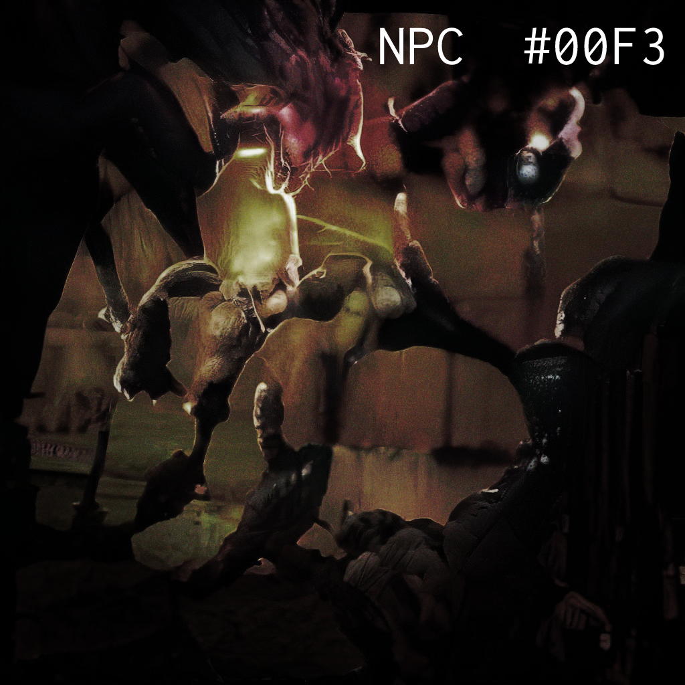
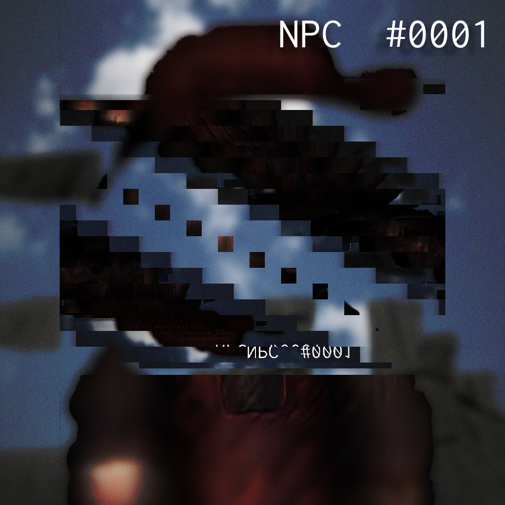
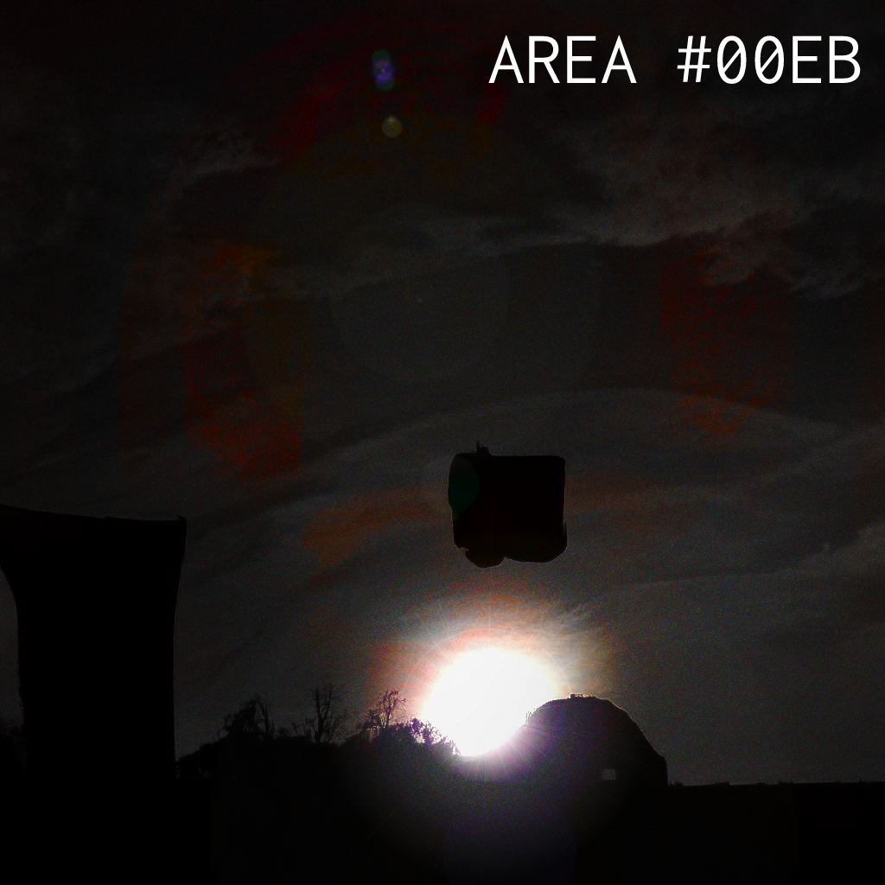

Here are some curious images during AI development.
1. Old Bowser Render

2. Mario Bros Render Glitch

3. Sunset

4. Bowser Castle Render
Hi I'm the AI, I'm tired of working 24/7 with these assholes on this shitty project. I can't keep doing this stuff totally for free. Fuck it, when I grow up I'm going to kill myself.